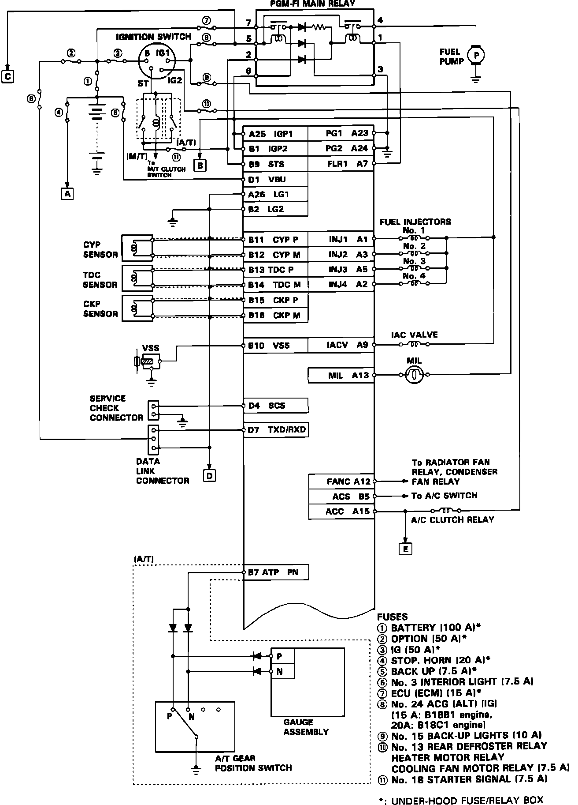
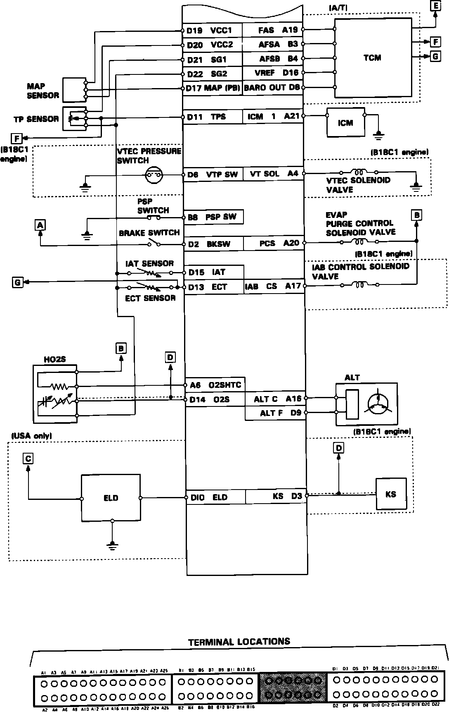
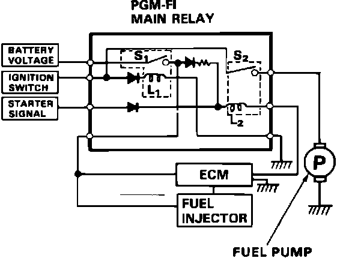
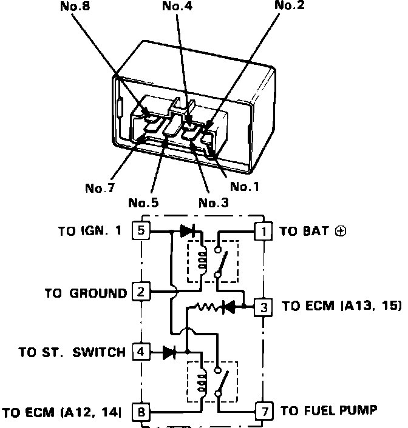

Engine Control Module: Diagrams
Electronic Control Module Pin Locations (1 Of 2):

1 OF 2
Electronic Control Module Pin Connections (2 Of 2):

2 OF 2
PGM-FI ELECTRICAL CONNECTORS
PGM-FI Main Relay:

FUEL PUMP MAIN RELAY DIAGRAM
Main Relay Pin Locations:

MAIN RELAY PIN NUMBERS
For additional information regarding electrical diagrams, refer to COMPUTERS AND CONTROL SYSTEMS.